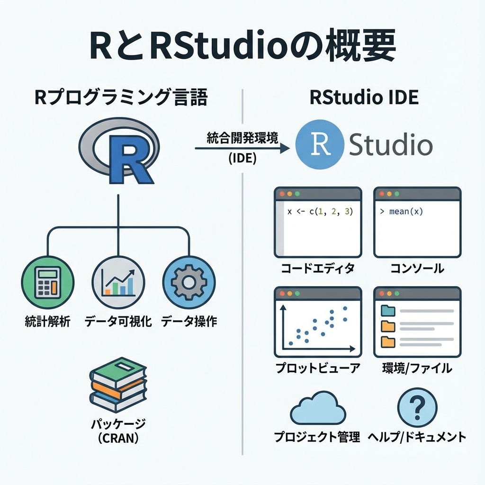

1 + 1
#> [1] 2第1回 RとRStudioの基礎

はじめに
この講義では、統計解析ソフト R と、Rを使いやすくする統合開発環境 RStudio の基本的な使い方を学びます。
RとRStudioとは
- R: 統計解析やデータ分析に特化したプログラミング言語です。無料で使えて、世界中の研究者やデータサイエンティストが利用しています。
- RStudio: Rを便利に使うためのソフトウェア（IDE）です。コードを書く、実行する、グラフを見る、といった作業を一つの画面で行えます。
RStudioの画面構成
RStudioを開くと、大きく4つのエリア（ペイン）に分かれています。 それぞれの役割を理解することが、効率的な作業の第一歩です。
1. Source Editor (左上)
プログラム（スクリプト）を書く場所です。
- ここに書いたコードは保存できるので、後から再利用できます。
- 複数行のコードを一度に実行したいときにも便利です。
Ctrl + Enter(MacはCmd + Enter) で、カーソルのある行を実行できます。
2. Console (左下)
プログラムを実行し、結果が表示される場所です。
- コードを1行ずつ試したいときは、直接Consoleに入力してもOKです。
- ただし、Consoleに書いたコードは保存されないので注意してください。
>この記号が出ていれば、コマンドの入力待ち状態です。
3. Environment / History (右上)
- Environment (環境): 読み込んだデータや作成した変数が表示されます。データの中身をクリックして確認することもできます。
- History (履歴): これまでに実行したコマンドの履歴が表示されます。
4. Files / Plots / Packages / Help (右下)
- Files: ファイル一覧が表示されます。
- Plots: 作成したグラフが表示されます。
- Packages: インストール済みのパッケージの管理ができます。
- Help: 関数のヘルプを表示できます。
?meanのように?をつけて実行すると、その関数の説明が表示されます。
計算してみよう
Console（左下の画面）に数式を入力して Enter キーを押すと、計算結果が表示されます。
10 * 5
#> [1] 50(100 - 20) / 4
#> [1] 20グラフを描いてみよう
Rはグラフを描く機能も強力です。 試しに、Rに最初から入っている cars というデータの散布図を描いてみましょう。
library(tidyverse)
theme_set(theme_gray(base_family = "HiraKakuProN-W3"))
ggplot(cars, aes(x = speed, y = dist)) +
geom_point() +
labs(title = "車の速度と停止距離")
ggsave("figure/01_intro/cars.png")変数（オブジェクト）
計算結果を保存しておく箱のようなものを 変数（またはオブジェクト）と呼びます。 Rでは <- という記号（代入演算子）を使って変数に値を入れます。
x <- 10
y <- 5変数の中身を見るには、変数名を入力して実行します。
x
#> [1] 10変数同士の計算もできます。
x + y
#> [1] 15関数
Rには便利な機能が 関数 としてたくさん用意されています。 例えば、平方根（ルート）を計算する sqrt() 関数を使ってみましょう。
sqrt(16)
#> [1] 4数字の列（ベクトル）を作るには c() 関数を使います。
scores <- c(80, 90, 75, 60, 95)
scores
#> [1] 80 90 75 60 95平均値を計算する mean() 関数を使ってみましょう。
mean(scores)
#> [1] 80よく使う演算子と関数
Rでのデータ分析では、以下の演算子と関数をよく使います。
算術演算子
# 足し算
2 + 3
#> [1] 5
# 引き算
10 - 4
#> [1] 6
# 掛け算
5 * 6
#> [1] 30
# 割り算
20 / 4
#> [1] 5
# べき乗
2^3 # 2の3乗
#> [1] 8
# 割り算の余り
10 %% 3
#> [1] 1ベクトルの操作
# ベクトルの作成
x <- c(1, 2, 3, 4, 5)
# ベクトル全体に同じ操作を適用
x * 2 # すべての要素を2倍
#> [1] 2 4 6 8 10
# ベクトルの要素数
length(x)
#> [1] 5
# ベクトルの合計
sum(x)
#> [1] 15
# ベクトルの最大値・最小値
max(x)
#> [1] 5
min(x)
#> [1] 1実践のヒント
ヒント1: コメントを活用しよう
コードの前に # をつけると、その行はコメント（メモ）になります。 後で見返したときに、何をしているコードなのか分かりやすくなります。
# これはコメントです。実行されません。
x <- 10 # 変数xに10を代入ヒント2: エラーを恐れない
プログラミングではエラーが出るのは当たり前です。 エラーメッセージをよく読んで、何が問題なのか考えてみましょう。 よくあるエラー:
could not find function: 関数名が間違っているか、パッケージを読み込んでいない。object not found: 変数名が間違っているか、まだ定義していない。- カッコの閉じ忘れ:
(や{を開いたら、必ず)や}で閉じる。
ヒント3: ヘルプの使い方
関数の使い方が分からないときは、? をつけて実行してみましょう。
?mean # mean関数のヘルプを表示スクリプトの保存
Consoleに書いたコードはRStudioを閉じると消えてしまいます。 後で再利用するために、左上の Source Editor にコードを書いて、ファイルとして保存しましょう。
- メニューから
File->New File->R Scriptを選択。 - コードを書く。
Ctrl + S(MacはCmd + S) で保存。拡張子は.Rです。
課題
- 自分の年齢を変数
ageに代入してください。 ageに 10 を足して、10年後の年齢を計算してください。c()関数を使って、好きな数字を3つ入れたベクトルmy_numbersを作ってください。my_numbersの平均値を求めてください。